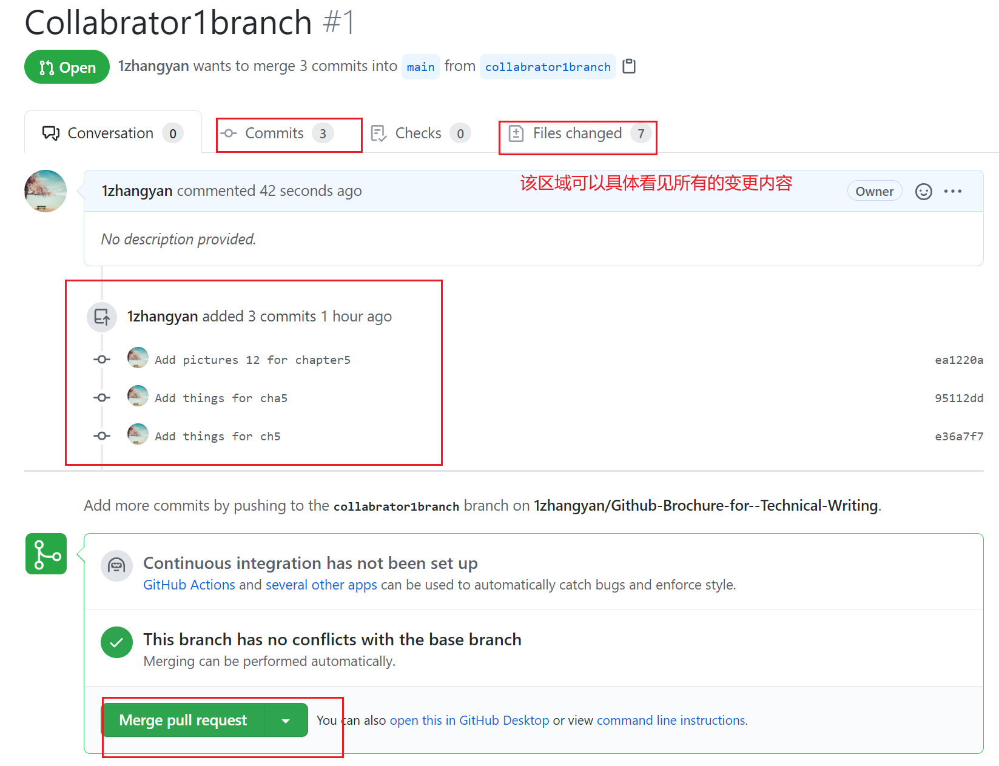

5. GitHub多人协作¶
5.1. 邀请你的队友¶
传统的文档协作过程中，可能在任务分配后每个人完成不同的任务，最后再通过拷贝文件或者网络传输到一台机器上进行汇总。
GitHub不希望你做的这么麻烦，他允许你和你的队友们将仓库克隆到自己本机，进行修改后再将各自的工作推送到远程仓库。
最终在远程仓库中讲你们的工作合并。
那么首先，你得需要队友。 选中GitHub仓库，点击setting选项卡，再选中ManageAccess选项，打开后点击invite a collabrator，添加你的队友。
选中GitHub仓库，点击setting选项卡，再选中ManageAccess选项，打开后点击invite a collabrator，添加你的队友。
5.2. 再谈分支¶
我们知道我们的提交默认都提交到了main分支上。当我们多个人协作的时候，无法保证每个人每时每刻的本地内容和远程内容都相同，这就使得如果使用单一的main分支，每次提交之前需要将远程的内容同步到本地。如果操作不当，本地的修改可能被覆盖。同时这样每次提交都需要考虑这些内容，就会使协作多出很多不必要的麻烦。
但是如果每个人都建立一个分支呢？你和你的队友们各自在各自的分支上工作，保证不动别人的分支，你们只管负责自己的部分，等到所有人都结束整个项目后，再把所有的分支都汇总到一起，汇总到一个分支上来，是不是就极大地减少了合作期间的交流成本？
5.3. 克隆仓库并新建分支¶
在第三章中创建远程仓库并从本地克隆这一小节中，我们学习了如何把远程的仓库克隆到本地。
下面我们介绍如何新建分支
找到New branch 选项卡。
按照提示创建分支，所谓分支就是从一个分支中分出来的，必然需要一个模板分支来创建，一般选择main。
当你创建分支的过程中发现当前分支已经有修改的内容了，但是没有提交，需要勾选下面的选项，将修改带到新的分支中去。
这样就创建了新的分支，每个人都可以在分支上工作而互相不打扰了。
5.4. 合并分支¶
尽管我们有很多种方法进行分支合并，但是我仍然建议使用pull request这种方法。
找到Pull request选项卡，点击。

之后跳转到GitHub页面，选择需要合并的两个分支，你可以为这次合并添加一个描述，描述具体内容，而后创建这次合并请求。

创建合并请求之后，在仓库的Pull Request选项卡中，所有的合作者都可以看见这个请求。

这就意味着所有的人都可以审阅这次请求，帮助提交者确认是否有错误。如果没有错误，那么由管理员合并分支，完成这次请求。

这样一个标准的合并流程便完成了。
通过这种方式，可以让团队开发效率变得更高。